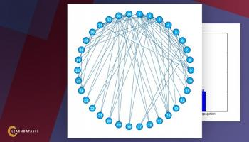

Wow! Very good explanation.
Also on Learn Data Sci
How to Become a Data Science Consultant …
What sort of projects do DS consultants do? It really does vary, but oftentimes …
Top 7 Online Data Science Courses for …
These are the best data science courses available online in 2019. Earn a …
Python for Finance, Part I: Yahoo & …
Less than a decade ago, financial instruments called derivatives were at the …
Top 6 Machine Learning Courses - …
Learn Machine Learning this year from these top courses. Average time to learn is …
Introduction to Word Embeddings: …
Understanding After running the marathon, I could barely keep my …
How to Stream Text Data from Twitch …
Learn how to connect to the Twitch Internet Chat Relay (IRC) using Sockets in …
Sentiment Analysis on Reddit News …
In the last post, K-Means Clustering with Python, we just grabbed some …

K-Means & Other Clustering …
For the clustering problem, we will use the famous Zachary’s Karate Club …